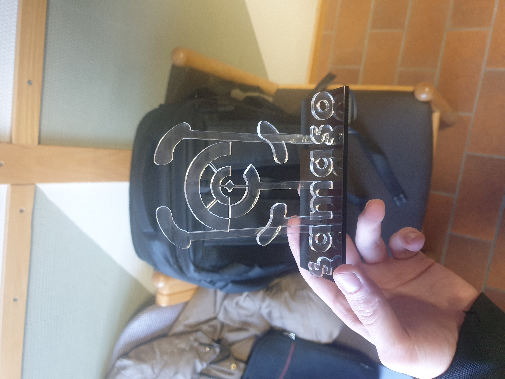
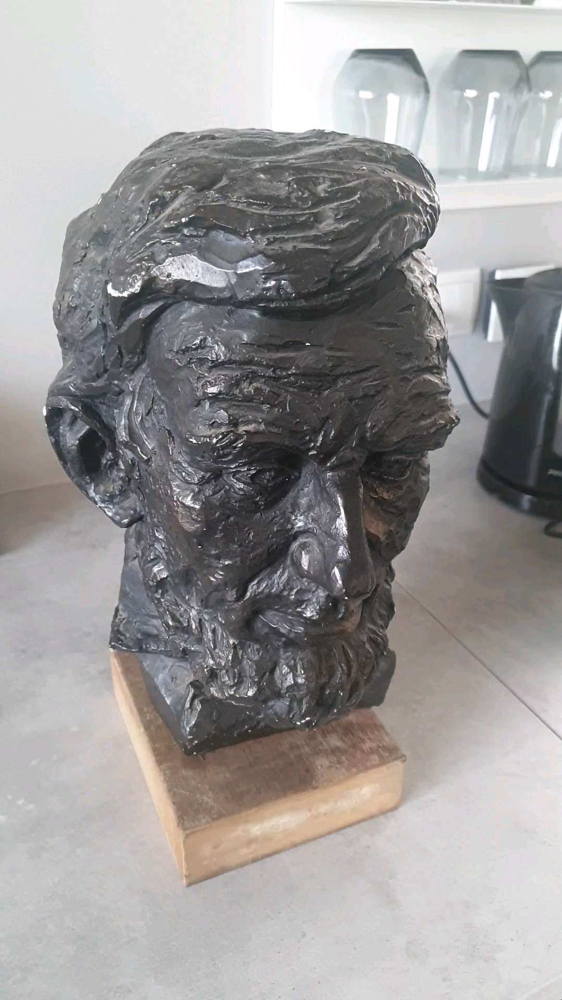

Mechanical Engineering Student · Founder of Samaso
Introduction
This is my portfolio for VÉL608G, Tölvustýrð framleiðsla, at the University of Iceland. It also covers some of the other projects I'm working on.
About me
I'm studying mechanical engineering at Háskóli Íslands and I run a company called Samaso, which builds AI shoplifting detection for small shops. Outside of school I read a lot, watch films, play games and draw.
Goals for this course
Going into this course I wanted to learn how to use the laser cutter, the vinyl cutter and the 3D printer, and how to do parametric design and 3D scanning. I also wanted to make some physical things for Samaso (a sticker for my laptop and an ornament for my desk) and print real parts for the drone I'm building in another course.
How this site is structured
Each menu item opens an article. The assignments cover the whole process: idea, design, machine settings, testing, what went wrong, and the result. Design files are linked at the bottom of each one.
Close
CV
Samaso — Founder
2025 — Present
I run Samaso, an AI shoplifting-detection product for small shops. I do most of the operations work, talk to customers, and decide what to build next. Right now we have a browser prototype that uses a vision API to detect when someone picks an item up and keeps it. The plan is to move to on-device YOLO with object tracking, and to support RTSP and CCTV camera feeds.
Krónan — Shift Manager (B-Vaktstjóri)
2022 — Present
I run end-of-day operations at the store: closing the registers, making sure the shop looks good, scheduling staff breaks, helping customers, and watching for theft. Watching how people steal in the shop every day is partly why I started Samaso.
Kapp ehf — Summer worker
2023 & 2024
Picking and shipping packages for Kapp, and cleaning and fixing fridges at Krónan stores.
University of Iceland — BS Mechanical Engineering
2023 — Present
BS in mechanical engineering. So far I've done thermodynamics projects (Brayton cycle, Reheat Rankine cycle, Diesel-fired water heater) using Python with CoolProp and EES, and now this course on computer-controlled manufacturing.
Menntaskólinn við Hamrahlíð — IB Diploma (Cambridge)
Languages: Icelandic (native) and English (fluent). CAD/CAM: Fusion 360, OpenSCAD, Inkscape, Adobe Illustrator, PrusaSlicer. Programming: Python (CoolProp, NumPy, OpenCV), HTML/CSS/JS. Fabrication: Prusa MK4, laser cutter, Roland-class vinyl cutter. I also have a driver's license and use Git and GitHub.
Close
Assignment 1 · This Website
1. Idea and inspiration
I looked through templates on HTML5 UP and picked the "Dimension" template because each piece of content opens in its own popup window. I liked that for a portfolio because each project gets its own space.
Instead of a regular background I used a black hole video I had made earlier. I added small text in the corners to make it look more like a control panel, and stuck to black with cyan accents to fit the space theme. The fonts are Syncopate for headings, Manrope for body text and JetBrains Mono for code.
2. Media and code
The original video file was several hundred MB which is way too big for a webpage. I used HandBrake to compress it down to about 4 MB at 720p, H.264. I also put a dark transparent layer over it in CSS so the white text stays readable while the video plays underneath.
The site is plain HTML, CSS and JavaScript. No frameworks. The CSS uses Flexbox to keep things centered, and the JavaScript just hides the header and shows the article when you click a menu link.
Screenshot of the part of index.html that loads the background video:
3. Putting it on GitHub
To get the site live I used Git Bash from the command line. The steps were:
git init to make a local repository.
git add . and then git commit -m "Initial setup" to save the files.
git remote add origin <url> to connect to the GitHub repo.
git push -u origin main to upload everything.
In the GitHub settings I turned on GitHub Pages with the source set to main / root.
The hardest part was getting the file paths right. Some links worked on my computer but broke after the site went live. I fixed it by putting all the files in one assets/ folder and using simple relative paths.
This assignment had two parts: vinyl cutting, and laser cutting with parametric design and a press-fit assembly. I decided to do both around my company's logo (Samaso) so that the work would be useful to me afterwards. The vinyl part became a sticker for my laptop and for the paper I use to wrap stickers when I send them to customers. The laser part became a Samaso ornament for my desk.
2. Vinyl cutting
I had the Samaso logo as a vector file in Illustrator. I exported it as SVG and opened it in the vinyl cutter's software (Roland CutStudio). Some of the paths were overlapping each other in the file, so the cutter would have tried to cut the same line twice. I had to clean those up before sending the job.
Material was matte black vinyl. Settings were blade depth around 0.25 mm, force 80 gf, speed 30 mm/s. The design was about 12 by 12 cm, well inside the 100 by 50 cm limit of the cutter.
After cutting I weeded the design (pulled away the vinyl I didn't want) using a small pick. Then I put transfer tape over the top, stuck it where I wanted it, pressed it down hard, and peeled the transfer tape off at a sharp angle. Two places I used it are shown below.
Fig. 1a — vinyl on the paper I use to wrap stickers.Fig. 1b — Samaso sticker on my laptop.
3. Parametric design in Fusion 360
I made the ornament parametric in Fusion 360 so I can resize it later without redoing everything. The whole shape is built from a small list of parameters:
// User Parameters — Samaso desk ornament
material_thickness = 3 mm // 3 mm cast acrylic
kerf = 0.20 mm // measured for this laser + material
slot_width = material_thickness - kerf
sign_height = 90 mm
sign_width = 130 mm
foot_count = 11
foot_inset = 8 mm
letter_extrude = material_thickness
tab_length = 10 mm
tab_clearance = 0.05 mm // light press-fit, no glue
I never typed fixed numbers into the slot widths. They are calculated as material_thickness - kerf. So if I want to switch from 3 mm acrylic to 5 mm plywood later, I only change two values and every slot, tab and foot updates. I tested this by scaling everything up by 1.5x and re-exporting the DXF, and it still worked.
The main sign is a flat plate with the Samaso symbol and the word "samaso" on it. Two legs slot into a base to hold it up. There are eleven joints in total and no glue or screws.
4. Kerf testing
Before cutting the real part I needed to know the kerf (how much material the laser burns away). I made a small test piece: a rectangle with ten little tabs cut from the inside, where each tab's slot is 0.05 mm wider than the last. After cutting I tried to fit each tab into its slot and noted which one was tight but not loose.
For 3 mm cast acrylic on this machine, the right slot width was 2.80 mm, which means the kerf is 0.20 mm. I put that number into my Fusion 360 parameters as kerf = 0.20 mm and every slot in the ornament got the correction automatically.
5. Cutting and assembly
I exported the flat panels as DXF files and opened them in Inkscape to set the right colors for the laser (red for cutting, black for engraving). After cutting, ten of the eleven joints fit perfectly. The middle one was a bit loose. I think this is because the laser hits that part of the bed at a slight angle (the mirror is bent there), which makes the kerf wider in that corner. Next time I would make that one tab a little thicker to compensate.

Fig. 2 — the finished ornament. Clear acrylic for the logo and legs, black acrylic for the base.
6. Challenges and solutions
The kerf for the laser was given as a range, not a specific number. I solved this with the comb test above and got 0.20 mm, which I then used in the model.
One of the eleven joints was looser than the others. The same shape fit fine in other places on the sheet, so it's a problem with that part of the laser bed (the mirror is slightly bent there) and not with the model. The fix is to make that one tab a bit wider next time.
The thin parts of the logo kept lifting off when I tried to weed the vinyl. I switched from tweezers to a small pick and cooled the vinyl in the fridge for a few minutes first. Cooler vinyl sticks to its backing better.
When I exported from Illustrator some shapes had two overlapping outlines, and the cutter wanted to cut both of them. I used Pathfinder > Unite in Illustrator to merge them and then double-checked everything in Inkscape before sending the file.
7. What I think makes this project mine
I designed the whole ornament from scratch around my own logo, with eleven joints, three different acrylic colors, and full parametric setup so I can resize it later. The vinyl half came out very wonderfully on my laptop.
8. Sources and design files
Inspiration for floating-letter desk signs: Etsy listings of acrylic name signs (acrylic desk signs on Etsy) and similar designs on Thingiverse. The leg-and-base shape is a common idea, but the Samaso logo and joint layout are mine.
The brief asked for an object that has to be 3D printed, and to test what the printer can and can't do. I wanted to make something I would actually use, so I picked a part I need for another course (Tölvustýrður vélbúnaður): a landing foot for the drone I'm building.
Search pages and keywords
I searched in a few places to see what other people had done. The keywords that gave the best results were:
Google and Google Images: TPU drone landing gear, compliant drone foot 3d print, flexible 3d printed bumper, TPU print no supports overhang.
Printables: drone foot, landing gear TPU, quadcopter leg flex.
Thingiverse: compliant mechanism, shock absorber 3d print.
Claude and ChatGPT: I asked the AI to compare TPU, PLA and PETG for vibration damping, and to check if my overhang plan would work.
From OpenSCAD to Fusion 360
My first try was a foot in OpenSCAD with internal lattice cavities for shock absorption. It looked good on screen but it didn't print well in TPU. TPU does not work with supports because they either fuse to the part or rip the surface when you try to remove them. After two failed prints I switched to Fusion 360 and made a simpler design that doesn't need any supports. All the overhangs are 45 degrees or less and the bottom is flat. The internal cavities are still there which is the reason the part still has to be 3D printed.
2. Why 3D printing (additive vs subtractive)
The final foot has features you couldn't really make with a milling machine:
Internal cavities for flex. Long thin pockets inside the part that let it bend. A milling tool can't reach inside the wall to cut these. You would have to split the part in two and glue it back together, which would ruin the flex.
Curved bottom surface. To mill this you would need a 5-axis machine and custom fixtures, which makes no sense for a 15 g part you only need one of.
TPU is rubbery and very hard to machine because it bends away from the cutter.
So the design isn't just OK for 3D printing. It can only be made this way at this size and in this material.
3. Printer testing and design rules
Before printing the actual part I printed a few small test pieces on the Prusa MK4 to see what the printer could handle in TPU:
Overhang test. A fan shape with arms at 30°, 40°, 45°, 50° and 60° from vertical. It came out clean down to 45°, started getting messy at 50°, and was clearly drooping at 60°. So I kept all overhangs in the final model at 45° or less.
Bridge test. Bridges at 5, 10, 15 and 20 mm. Clean up to 15 mm. 20 mm sagged in the middle.
Clearance test. A small cylinder inside a sleeve with gaps of 0.15, 0.20, 0.30 and 0.40 mm. 0.30 mm moved freely without rattling. 0.20 mm sometimes fused together.
I put these numbers back into Fusion 360 before slicing the final part. All overhangs at or below 45° and all moving-part clearances at 0.30 mm.
4. Final print
I sliced it in PrusaSlicer using the TPU profile, 0.20 mm layer height, 30% gyroid infill and no supports. The slicer estimated about 14 g of filament, well under the 100 g limit in the brief. The redesigned model printed on the first try, which felt great after the two OpenSCAD failures.
I weighed it on a kitchen scale afterwards and it came out to 15 g, basically matching the slicer estimate.
Fig. 3 — finished TPU drone foot, 15 g.
What I learned
TPU and PLA behave very differently. PLA prints fine with supports but TPU does not. With TPU you have to design the part so it doesn't need supports in the first place.
OpenSCAD is good for designs that are mostly math, but it's slow when you have to keep adjusting things to fit a real object. Fusion 360 is faster for that.
Simpler designs usually win. My first complicated lattice version failed twice. The simpler wall-and-cavity version printed on the first try.
5. 3D scanning — Lincoln bust, three tries
For the second part of the assignment I scanned a bronze head of Abraham Lincoln using the Kiri Engine app on Android. I did three scans in different lighting to see what made the scan come out better or worse.

Fig. 4 — Abraham Lincoln statue my great granmda owned. The shiny dark bronze surface is hard for photogrammetry.
Try 1 — kitchen, ceiling light only
First scan in the kitchen with only the ceiling light on. The overall shape came out OK, but the surface has bumps and noise. One side of the head is darker than the other in the texture because of where the light was. The reflections on the bronze also caused holes in the mesh around the cheeks. You can view it here:
I tried again in a different room with more ambient light. The shape came out better, with fewer holes and a smoother forehead. But the lighting was still uneven so one cheek looks brighter than the other in the texture. Also the bust was on a shelf, so I couldn't get all the way around it to capture the back of the head properly.
Last try, in a different spot again with more even lighting. I also moved the bust away from the wall so I could walk all the way around it. This is the one I kept. The shape is accurate (you can see the beard, the ear and the waves in the hair), the texture is evenly lit, and there are no holes.
Lighting and being able to walk around the object matter more than the phone's camera. Shiny surfaces like bronze are the hardest because the reflection moves with the camera and the software gets confused. Even, soft, indirect light is best, and matte objects are easier than shiny ones. If I scanned the bust again I would put a thin layer of chalk powder on it first to kill the reflections.
6. Sources and design files
Print settings: the Prusa Knowledge Base for the slicer defaults, and a Maker's Muse YouTube series on TPU printing.
Background reading on flexures: Howell, Compliant Mechanisms, plus some shorter articles online. My geometry is my own.
3D scanning app: Kiri Engine on Android, free version.
Lighting tips for scanning: Kiri Engine's own help articles and a few photogrammetry forum threads on matte spray.
The final project is in a separate repo because it's shared with another course. It uses the parametric design from Assignment 2, the 3D printing from Assignment 3 and the embedded systems work from Tölvustýrður vélbúnaður.

.jpg)
.jpg)